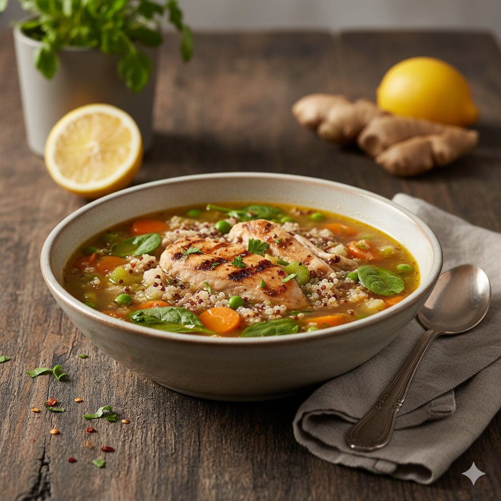
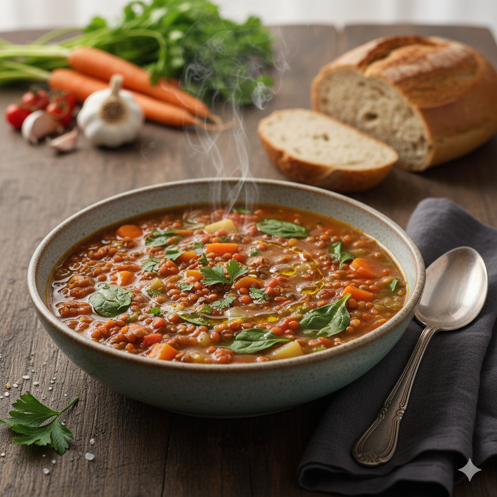

arrow_circle_left
Favoritos

30 min
favorite
Salada de Quinoa com Frango Grelhado
Uma salada nutritiva e saborosa, perfeita para um almoço leve ou jantar.

45 min
favorite
Sopa de Lentilha com Legumes
Uma sopa reconfortante e rica em nutrientes, ideal para dias mais frios.